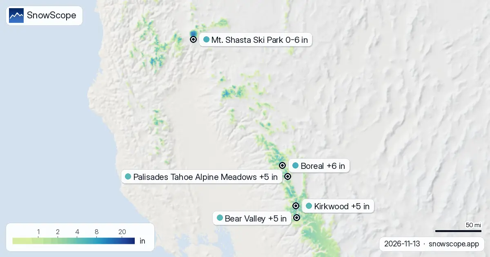

Bollettini neve · Powder
Bollettini neve quotidiani per sciatori: dove c'è neve, cosa arriva e dove sciare, dalla mappa neve di SnowScope e dalle stazioni di misura. Ogni numero viene dai dati del giorno.

Superficie innevata: 49.467 sq mi (128.120 km²) il 11 novembre, 49.050 sq mi (127.040 km²) oggi, 64.429 sq mi (166.870 km²) previsti per il 16 …

Stratton per quota, dal nostro modello: vetta 4 in (10 cm) (3.881 ft / 1.183 m), metà 2 in (6 cm) (2.936 ft / 895 m), base 1 in (2 cm) (1.991 ft / …

Neve fresca a La Grave: 61 cm nelle ultime 72 ore, compresi 3 cm nelle ultime 24. Il nostro modello neve ora mette circa 78 cm sui pendii superiori. …

Il nostro modello neve prevede che Whistler Blackcomb riceverà 88 cm di neve fresca entro lunedì 16 novembre 2026, guidando i resort globali.

Mount Cain Alpine Park, neve fresca rispetto alla regione: 15 cm in 72 ore (12 novembre). La superficie innevata è passata da 281.250 km² il 10 …

Il nostro modello divide Piau-Engaly in tre quote: 2 cm in vetta (2.527 m), 0 cm a metà montagna (2.144 m), 0 cm alla base (1.762 m). Nelle ultime 72 …

L'area bianca sulla mappa è passata da 45.820 km² (9 novembre) a 38.440 km² oggi, e la previsione dice 46.730 km² il 14 novembre. Glacier 3000: …

38 cm in 72 ore: è la neve fresca caduta a Tweedsmuir Ski Club. Tweedsmuir Ski Club ha guadagnato 38 cm di neve nuova nelle ultime 72 ore, 35 cm dei …

Il nostro modello neve prevede fino a 58 cm di neve fresca per La Grave, Francia, entro sabato 14 novembre 2026. Scopri dove altro è prevista neve.

Una nevicata il 4 novembre ha lasciato da 8 a 13 inches di neve fresca su cinque stazioni in quota del Colorado vicino ad Aspen. Cinque giorni dopo, metà era sparita. Cosa significa per le giornate di powder.

Ogni giorno elenchiamo le località che dovrebbero ricevere più neve fresca, nelle prossime 24 ore e fino al 13 novembre, in Europa, Marocco e Nord …


Dal 6 novembre la neve è passata da 0 sq mi (0 km²) a 788 sq mi (2.040 km²) oggi; per il 11 novembre la nostra previsione indica 104 sq mi (270 km²). …

Whistler Blackcomb ha ricevuto 100 cm di neve fresca nelle ultime 72 ore, di cui 68 cm nelle ultime 24 ore. Ora ha circa 131 cm sui pendii superiori, …

Dove dovresti essere nei prossimi giorni? Ecco le località con più neve fresca prevista nelle prossime 24 ore e fino al 11 novembre, in Europa, …

Mt Baker ha ricevuto 13 in (32 cm) di neve fresca nelle ultime 72 ore, di cui 1 in (3 cm) nelle ultime 24 ore. Ora ha circa 17 in (44 cm) sui pendii …

Ski Callaghan ha ricevuto 56 cm di neve fresca nelle ultime 72 ore, di cui 9 cm nelle ultime 24 ore. Ora ha circa 48 cm sui pendii superiori, secondo …

Artesina ha ricevuto 44 cm di neve fresca nelle ultime 72 ore. Ora ha circa 20 cm sui pendii superiori, secondo il nostro modello neve.

La tabella di oggi ordina le località di Europa, Marocco e Nord America per neve fresca prevista nelle prossime 24 ore e fino al 10 novembre, con la …

Ski Callaghan ha ricevuto 44 cm di neve fresca nelle ultime 72 ore, di cui 32 cm nelle ultime 24 ore. Ora ha circa 41 cm sui pendii superiori, …

Mt Baker ha ricevuto 11 in (27 cm) di neve fresca nelle ultime 72 ore, di cui 4 in (11 cm) nelle ultime 24 ore. Ora ha circa 19 in (47 cm) sui pendii …

Isola 2000 ha ricevuto 62 cm di neve fresca nelle ultime 72 ore, di cui 7 cm nelle ultime 24 ore. Ora ha circa 19 cm sui pendii superiori, secondo il …

Quanta neve guadagneranno le montagne? La nostra tabella mostra le località con più neve fresca prevista nelle prossime 24 ore e fino al 9 novembre, …

Le Alpi hanno visto nevicate significative nelle ultime 72 ore, con Isola 2000 che ha registrato 58 cm di neve nuova entro giovedì 5 novembre 2026.

Rasos de Peguera ha ricevuto 15 cm di neve fresca nelle ultime 72 ore. Ora ha circa 20 cm sui pendii superiori, secondo il nostro modello neve.

Il nostro modello neve per il 5 novembre 2026 prevede fino a 94 cm di neve fresca nel Canada occidentale entro domenica, con nevicate significative anche nelle Alpi e negli Stati Uniti occidentali.

Telluride ha ricevuto 12 in (31 cm) di neve fresca nelle ultime 72 ore, di cui 1 in (3 cm) nelle ultime 24 ore. Ora ha circa 46 in (118 cm) sui …

La tabella di oggi ordina le località di Europa, Marocco e Nord America per neve fresca prevista nelle prossime 24 ore e fino al 7 novembre, con la …

Kope ha ricevuto 21 cm di neve fresca nelle ultime 72 ore. Ora ha circa 11 cm sui pendii superiori, secondo il nostro modello neve.

Oukaimden ha ricevuto 14 cm di neve fresca nelle ultime 72 ore, di cui 5 cm nelle ultime 24 ore. Ora ha circa 3 cm sui pendii superiori, secondo il …

Rasos de Peguera ha ricevuto 17 cm di neve fresca nelle ultime 72 ore, di cui 17 cm nelle ultime 24 ore. Ora ha circa 13 cm sui pendii superiori, …

Silverton Mountain ha ricevuto 26 in (66 cm) di neve fresca nelle ultime 72 ore. Ora ha circa 52 in (131 cm) sui pendii superiori, secondo il nostro …

Ogni giorno elenchiamo le località che dovrebbero ricevere più neve fresca, nelle prossime 24 ore e fino al 6 novembre, in Europa, Marocco e Nord …